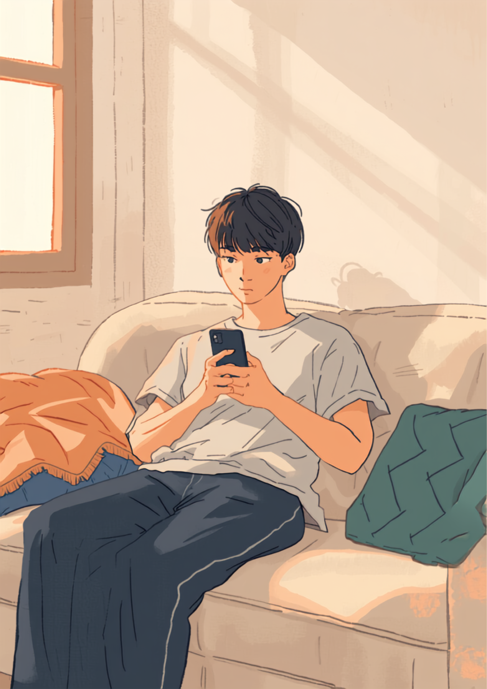
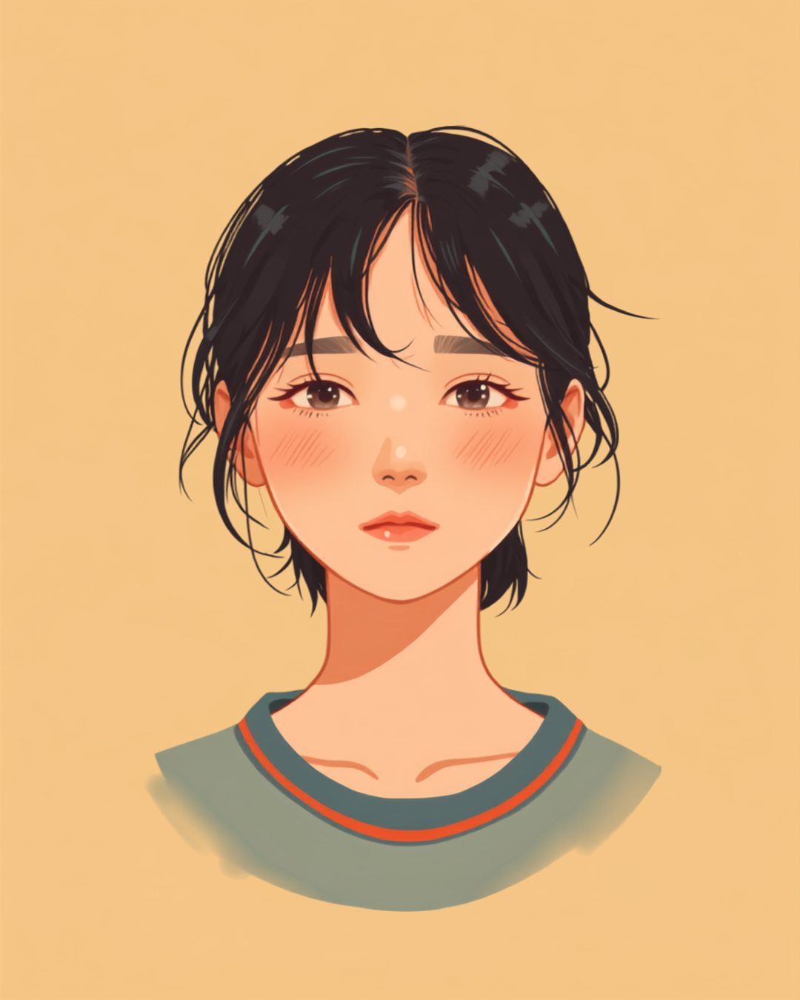

スマホの画面が光る。会社のアプリのアイコンに、小さな赤い丸がつく。ただそれだけのことなのに、指が止まる。中身を読んでいないのに、もう心臓のあたりが重くなっている。休職中、そんな数秒を繰り返している方は少なくないようです。
PR



通知が来た瞬間、画面を見たまま体が動かなくなる
開くか開かないか、その数秒に起きていること

通知バッジって、中身がわからないぶん、見た人の想像力にすべてを委ねてしまうんですよね。休職中は特に、その想像が悪い方向に働きやすいのかもしれません。まめざる
就労支援の現場で、休職中の方から何度も聞いてきた話があります。会社の通知バッジを見た瞬間、スマホをそのまま裏返しにしてテーブルに置いてしまう、というものです。中身は経費精算のお知らせかもしれないし、上司からの何気ない一言かもしれない。それでも、開く前のその数秒間だけは、最悪のシナリオが頭の中を占めてしまうようです。
面白いのは、これが「連絡が来て困る」という話とは少し違うということです。実際に開いてみれば、大した内容ではないことのほうが多いと話す方が大半でした。それでも体は、開く前から先に緊張してしまう。頭で「たぶん大丈夫」とわかっていても、指が先に止まってしまうことがあるようです。
!
通知への反応の強さや、開けるまでにかかる時間には個人差があります。ここで挙げている感覚がすべての方に当てはまるわけではありません。不安が強く続く場合は、一人で抱えず主治医や支援者に相談することをお勧めします。
「正直言うと、通知バッジの数字を見ただけで、心臓のあたりがドッと重くなるんです。会社のアプリのアイコンに赤い丸がついてるのを見た瞬間、指が止まって、そのままスマホを裏返しにしてテーブルに置いちゃう。それが3ヶ月くらい続いてました。中身を見れば大抵は経費精算のお知らせとかなんですけど、見るまではそれがわからないから、余計に怖いんですよね。」
30代・女性（適応障害・事務職、休職6ヶ月目）
開けないのは、気持ちが弱いからじゃない
「早く開けばいいのに」と自分を責めてしまう方もいます。でも、これは気持ちの強さの問題ではないようです。休職中は、通知の中身がそのまま自分の評価や存在意義に直結していると感じやすい状態にあります。「元気そうって思われたらどうしよう」「既読をつけたら催促されるかもしれない」という想像が、開く前から先回りしてくるのです。
相談の一コマ

相談者
既読をつけたら「思ったより元気そう」って思われる気がして、通知が来てるのはわかってるのに指が動かないんです。
まめざる
既読のタイミングと体調の重さは、本当は関係ないはずなんですけどね。それでも気になってしまうのは、休んでいることへの申し訳なさが強いからなのかもしれません。
相談者
開かないと開かないで、ずっと頭の隅に引っかかってるのもつらくて。
まめざる
その板挟み、しんどいですよね。全部を今すぐ判断しなくても、バッジの数字だけ確認して、開けそうな時間まで持ち越すという選び方もできますよ。
開いたあとにやってくる、安堵と後悔
やっとの思いで開いてみると、多くの場合は拍子抜けするような内容だったりします。ほっとする一方で、「なんであんなに身構えてたんだろう」という、少し情けない気持ちも一緒にやってくるようです。そしてその安堵も長くは続きません。次の通知が来れば、また同じところから緊張が始まります。
開いても開かなくても、いったんは緊張が体に残る
「未読のまま3日放置したことがあります。開いたら『体調どうですか、無理せず』みたいな、めちゃくちゃ普通の内容で、拍子抜けして逆に自分が情けなくなりました。想像してた最悪のシナリオと全然違ってて。でも次にまた通知が来たら、たぶん同じように固まると思います。頭では大丈夫ってわかってても、体のほうが先に緊張しちゃうんですよね。」
20代・男性（うつ病・営業職、休職4ヶ月目）
全部を今、判断しなくていい
全部を今、判断しなくていい
通知が来たからといって、その場で「見る」か「見ない」かを決めなければいけないわけではありません。バッジの数字だけ確認して、開ける時間を自分で選ぶ。それだけでも、体にかかる負担は変わってくるようです。
i
スマートフォンの設定で、特定のアプリだけ通知音や画面表示を一時的にオフにする機能を使っている方もいるようです。全部を我慢して見続ける必要はありません。連絡が完全に途絶えるのが不安な場合は、家族や信頼できる人にだけ確認をお願いする方法もあります。
返信の速さより、あなたの状態が落ち着いていることのほうがずっと大事です。今すぐ開けなかった自分を責めなくて大丈夫ですよ。まめざる
指が止まるのは、あなたが弱いからではありません。通知の中身が自分の存在意義に直結していると感じやすい今の状態が、そうさせているだけです。
よくある質問
Q. 通知を見ただけで動悸がするのは、おかしなことでしょうか？
休職中に会社関連の通知へ体が強く反応することは、珍しくない感覚だとされています。通知の中身が自分の評価や存在意義に直結していると感じやすい状況では、体が先に緊張するのは自然な反応のひとつと考えられます。ただし動悸が強く続く、日常生活に支障が出るという場合は、自己判断せず主治医に相談することをお勧めします。
Q. 会社からの連絡には、すぐ返信しないといけませんか？
休職中の連絡対応に法律上の義務はないとされています。返信の速さよりも、無理のない範囲で対応できることの方が大切だと考える職場も増えているようです。対応のペースについて不安がある場合は、事前に人事や上司と取り決めをしておくと気持ちが楽になる場合があります。
Q. 会社のアプリの通知そのものを止めてしまってもいいですか？
スマートフォンの設定で、特定のアプリの通知音や表示を一時的にオフにすることは可能です。実際にそうした工夫をしている方もいるようです。ただし完全に連絡が取れなくなる状態は避けたいという場合は、家族や信頼できる人にだけ確認をお願いするなど、間に人を挟む方法も選択肢になります。
Q. この緊張はいつまで続くのか不安です
通知への反応が和らぐまでの期間には個人差があり、断言できるものではありません。少しずつ開ける頻度が増えていったという声がある一方、時間がかかったという声もあります。焦って克服しようとするより、今の自分に合った距離の取り方を探すことを優先し、不安が強い場合は主治医や支援者に相談しながら進めることをお勧めします。
緊張は一度で終わるものではなく、何度でも訪れていい
PR


一人で抱え込む前に、今の気持ちを話してみませんか
「まだ迷っている」段階でも大丈夫です。mimemimeの無料相談は、今の状況の整理から一緒に始められます。
無料で話してみる
この記事に、聞いてみたいことはありますか？
「自分の場合はどうなんだろう」と思ったことを、気軽に書いてみてください。いただいた質問は個別にお返事したうえで、匿名で記事にすることがあります。
おのざる
mimemime代表。就労支援の現場経験をもとに、障がいのある方の働く不安に寄り添う記事を執筆。